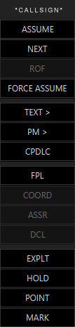
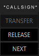

Callsign Pop Up Menu
The Callsign Pop Up Menu can be triggerd by pressing the right or left mouse button on the callsign of a target.
And it looks like this

ASSUME
Assume control of the selected target.
When the aircraft is assumed the top part of the Callsign menu will look like this:

ASSUME has been replaced by TRANSFER, which will transfer the aircraft to the controller you set as NEXT.
RELEASE has been added, this will release the aircraft. More commenly known as released to unicom.
NEXT
Changes the menu to the "NEXT" sub-menu. used to choose the atc position which that target should contact next.
ROF
Doesn't do anything in the current version of IVAC2. But will be used to indicate to another controller that you do an Request On Frequency of that aircraft.
FORCE ASSUME
Assume control of the selected target, forcibly taking control even if the network indicates that a different controller has currently assumed the target.
It does not take any action to request or force the pilot to make contact with you.
TEXT >
Opens a dialogue box to input a text message to be sent to all pilots of the aircraft using the your COM frequency.
All pilots tuned to your COM frequency will be able to see the message.
PM >
Opens a dialogue box to input a text message to be sent to the pilot of the aircraft as a private message.
Only the individual pilot will be able to see the message.
CPDLC
Toggles whether or not to automatically send clearances using the Controller/Pilot Data Link Communications. This should be turned-on for pilots indicating they are “voice only” so that IVAC2 will automatically send CPDLC messages when making changes to cleared altitudes, headings etc.
FPL
Opens the flight plan dialogue box for the currently selected target.
COORD
Doesn't do anything in the current version of IVAC2.
ASSR
Doesn't do anything in the current version of IVAC2.
DCL
Opens the data-link clearance dialogue box for the currently selected target; it is used to issue flight-plan clearances.
EXPLT
Displays the extrapolated route of the selected target. Can be removed by clicking the EXPLT button again or along with all other temporary markings by using the CLEAN button.
HOLD
Toggles the “Hold” indicator for the selected target; if the target is already marked as held, then the menu option is highlighted and changes to “XHOLD” and used to cancel the hold.
Targets marked as “Hold” can be listed together in a “Hold” flight-list.
POINT
Toggles the “Point Out” indicator for the selected target; if the target is already pointed out, then the menu option is highlighted and changes to “XPOINT” and used to cancel the point out.
Targets which are pointed out have a box drawn around their label in a contrasting colour which is visible to all controllers using IVAC2.
MARK
Toggles the “Mark” indicator for the selected target; if the target is already marked, then the menu option is highlighted and changes to “XMARK” and used to cancel the mark.
Targets which are marked have a box drawn around their label which is visible just to yourself.